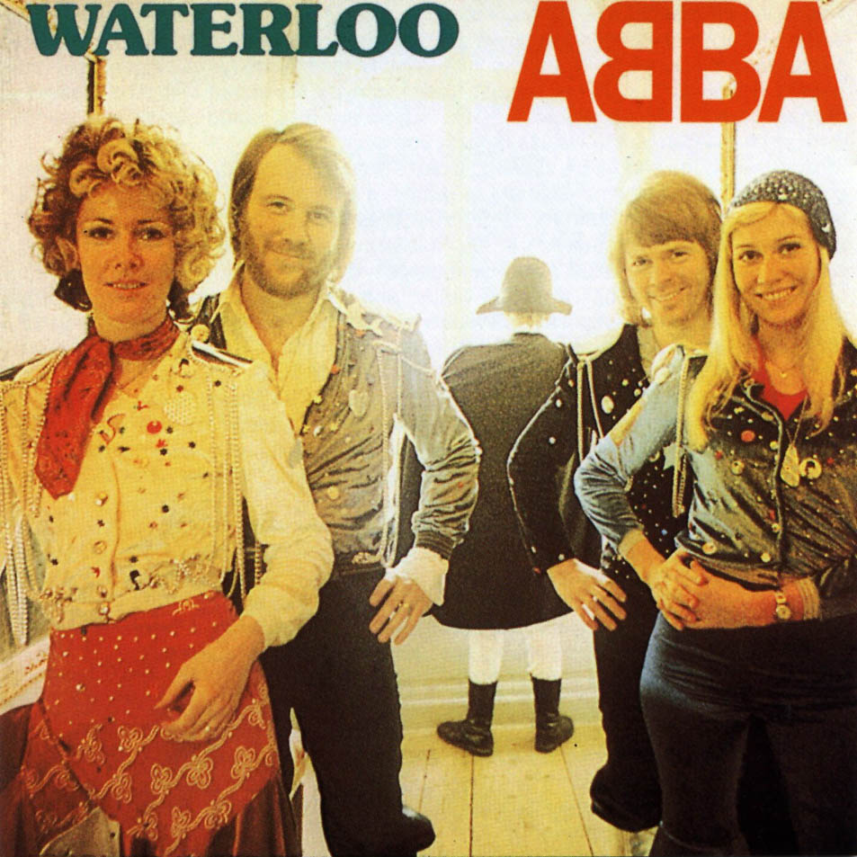

CD-Sammlung
- ABBA
- Waterloo
- "Waterloo" (Swedish version) 2:45
- "Sitting in the Palmtree" 3:39
- "King Kong Song" 3:14
- "Hasta Manana" 3:05
- "My Mama Said" 3:14
- "Dance (While the Music Still Goes On)" 3:05
- Madonna
- Music

- Music (Album Version) 3:44
- Impressive Instant (Album Version) 3:37
- Runaway Lover (Album Version) 4:47
- I Deserve It (Album Version) 4:23
- Amazing (Album Version) 3:43
- Nobody's Perfect (Album Version) 4:58
- Don't Tell Me (Album Version) 4:40
- What It Feels Like For A Girl (Album Version) 4:43
- Paradise (Not For Me) (Album Version) 6:33
- Gone (Album Version) 3:25
- American Pie (Album Version) 4:31
- Beatles
- Blue Album

- "Strawberry Fields Forever" 4:10
- "Penny Lane"3:03
- "Sgt. Pepper's Lonely Hearts Club Band"2:02
- "With a Little Help from My Friends"2:44
- "Lucy in the Sky with Diamonds" 3:28
- "A Day in the Life" 5:06
- "All You Need Is Love" 3:48